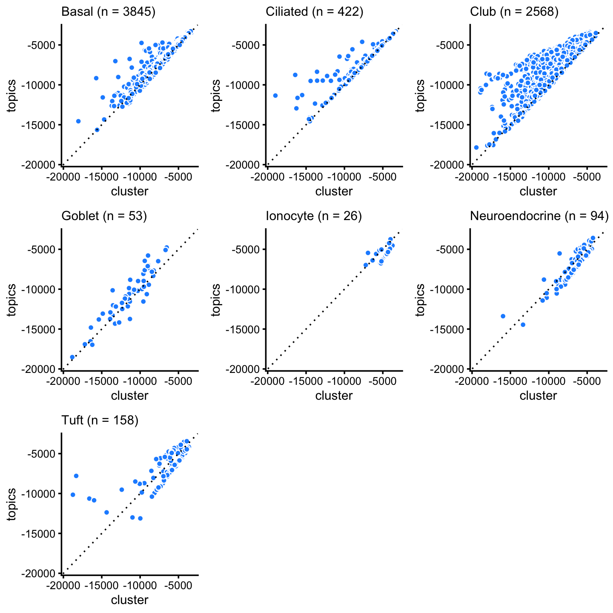

Identify clusters in droplet data using topic model
Peter Carbonetto
Last updated: 2022-01-28
Checks: 7 0
Knit directory: single-cell-topics/analysis/
This reproducible R Markdown analysis was created with workflowr (version 1.7.0). The Checks tab describes the reproducibility checks that were applied when the results were created. The Past versions tab lists the development history.
Great! Since the R Markdown file has been committed to the Git repository, you know the exact version of the code that produced these results.
Great job! The global environment was empty. Objects defined in the global environment can affect the analysis in your R Markdown file in unknown ways. For reproduciblity it’s best to always run the code in an empty environment.
The command set.seed(1) was run prior to running the code in the R Markdown file. Setting a seed ensures that any results that rely on randomness, e.g. subsampling or permutations, are reproducible.
Great job! Recording the operating system, R version, and package versions is critical for reproducibility.
Nice! There were no cached chunks for this analysis, so you can be confident that you successfully produced the results during this run.
Great job! Using relative paths to the files within your workflowr project makes it easier to run your code on other machines.
Great! You are using Git for version control. Tracking code development and connecting the code version to the results is critical for reproducibility.
The results in this page were generated with repository version f38e9f7. See the Past versions tab to see a history of the changes made to the R Markdown and HTML files.
Note that you need to be careful to ensure that all relevant files for the analysis have been committed to Git prior to generating the results (you can use wflow_publish or wflow_git_commit). workflowr only checks the R Markdown file, but you know if there are other scripts or data files that it depends on. Below is the status of the Git repository when the results were generated:
Ignored files:
Ignored: data/droplet.RData
Ignored: data/pbmc_68k.RData
Ignored: data/pbmc_purified.RData
Ignored: data/pulseseq.RData
Ignored: output/droplet/diff-count-droplet.RData
Ignored: output/droplet/fits-droplet.RData
Ignored: output/droplet/rds/
Ignored: output/pbmc-purified/fits-pbmc-purified.RData
Ignored: output/pbmc-purified/rds/
Ignored: output/pulseseq/diff-count-pulseseq.RData
Ignored: output/pulseseq/fits-pulseseq.RData
Ignored: output/pulseseq/rds/
Ignored: output/sims/
Untracked files:
Untracked: analysis/clustering-droplet.rds
Untracked: analysis/de_analysis_detailed_look_cache/
Untracked: analysis/de_analysis_detailed_look_more_cache/
Untracked: plots/
Unstaged changes:
Modified: code/plots.R
Note that any generated files, e.g. HTML, png, CSS, etc., are not included in this status report because it is ok for generated content to have uncommitted changes.
These are the previous versions of the repository in which changes were made to the R Markdown (analysis/clusters_droplet.Rmd) and HTML (docs/clusters_droplet.html) files. If you’ve configured a remote Git repository (see ?wflow_git_remote), click on the hyperlinks in the table below to view the files as they were in that past version.
| File | Version | Author | Date | Message |
|---|---|---|---|---|
| Rmd | f38e9f7 | Peter Carbonetto | 2022-01-28 | workflowr::wflow_publish(“clusters_droplet.Rmd”, verbose = TRUE) |
| Rmd | 015e254 | Peter Carbonetto | 2020-11-22 | Fixed up some of the text and plots in clusters_purified_pbmc analysis. |
| Rmd | 5d7ff64 | Peter Carbonetto | 2020-10-18 | Added analysis of single-cell likelihoods to clusters_pulseseq.Rmd. |
| html | 8e6c384 | Peter Carbonetto | 2020-10-18 | Added text describing likelihood scatterplots in clusters_droplet |
| Rmd | e672ef7 | Peter Carbonetto | 2020-10-18 | workflowr::wflow_publish(“clusters_droplet.Rmd”) |
| html | 7363e2a | Peter Carbonetto | 2020-10-18 | Added log-likelihood scatterplots to clusters_droplet analysis. |
| Rmd | a51c33b | Peter Carbonetto | 2020-10-18 | workflowr::wflow_publish(“clusters_droplet.Rmd”) |
| Rmd | 199ca88 | Peter Carbonetto | 2020-10-17 | Working on analysis of single-cell likelihoods in clusters_droplet.Rmd. |
| Rmd | 627cdb4 | Peter Carbonetto | 2020-10-16 | A couple minor edits to the code and text of the analyses. |
| html | 8a4b9da | Peter Carbonetto | 2020-10-15 | Adjusted code for some of the PCA plots in the clusters_droplet |
| Rmd | bb62871 | Peter Carbonetto | 2020-10-15 | workflowr::wflow_publish(“clusters_droplet.Rmd”) |
| html | 4cb48ba | Peter Carbonetto | 2020-10-15 | Adjusted dimensions of a PCA plot in clusters_droplet analysis. |
| Rmd | b64e34f | Peter Carbonetto | 2020-10-15 | workflowr::wflow_publish(“clusters_droplet.Rmd”, verbose = TRUE) |
| html | c679d14 | Peter Carbonetto | 2020-10-15 | Revised PCA plots showing the clustering in the clusters_droplet analysis. |
| Rmd | 3bff164 | Peter Carbonetto | 2020-10-15 | workflowr::wflow_publish(“clusters_droplet.Rmd”, verbose = TRUE) |
| html | c12c1cf | Peter Carbonetto | 2020-10-11 | Replaced dotplot with boxplot in clusters_pulseseq analysis. |
| Rmd | 60b069f | Peter Carbonetto | 2020-10-11 | workflowr::wflow_publish(“clusters_droplet.Rmd”) |
| html | 84e5598 | Peter Carbonetto | 2020-10-11 | Fixed small mistake in clusters_droplet analysis. |
| Rmd | bdcb88e | Peter Carbonetto | 2020-10-11 | workflowr::wflow_publish(“clusters_droplet.Rmd”) |
| html | d9bf10d | Peter Carbonetto | 2020-10-11 | Added T+N cluster to totalvardist plots in clusters_droplet analysis. |
| Rmd | 87d00d0 | Peter Carbonetto | 2020-10-11 | workflowr::wflow_publish(“clusters_droplet.Rmd”) |
| html | b6374a1 | Peter Carbonetto | 2020-10-11 | Added plots comparing total variation distances in clusters_droplet |
| Rmd | c69aa03 | Peter Carbonetto | 2020-10-11 | workflowr::wflow_publish(“clusters_droplet.Rmd”) |
| Rmd | 62834cb | Peter Carbonetto | 2020-10-09 | Working on various exploratory analyses of the droplet and pulse-seq data. |
| Rmd | d2377ec | Peter Carbonetto | 2020-10-06 | Simplified implementation of cellcycle_pca_plot by making use of a new pca_plot interface from the fastTopics package. |
| html | 5510fd5 | Peter Carbonetto | 2020-10-06 | clusters_droplet no longer uses plots.R. |
| Rmd | d5ea8c2 | Peter Carbonetto | 2020-10-06 | workflowr::wflow_publish(“clusters_droplet.Rmd”, verbose = TRUE) |
| html | d707238 | Peter Carbonetto | 2020-10-06 | Re-built clusters_droplet analysis using new fastTopics plots. |
| Rmd | f4e0448 | Peter Carbonetto | 2020-10-06 | workflowr::wflow_publish(“clusters_droplet.Rmd”, verbose = TRUE) |
| html | 3bada76 | Peter Carbonetto | 2020-10-04 | Added PCA plots to clusters_droplet analysis showing substructure in |
| Rmd | 198eaf8 | Peter Carbonetto | 2020-10-04 | workflowr::wflow_publish(“clusters_droplet.Rmd”) |
| Rmd | 5e57ced | Peter Carbonetto | 2020-10-03 | Working on plots highlighting substructure in T+N cluster. |
| html | ab1ed99 | Peter Carbonetto | 2020-09-27 | Resized plot in clusters_droplet analysis. |
| Rmd | 306f5dc | Peter Carbonetto | 2020-09-27 | workflowr::wflow_publish(“clusters_droplet.Rmd”) |
| html | bf299b9 | Peter Carbonetto | 2020-09-27 | Use pca_plot_with_counts in clusters_droplet analysis. |
| Rmd | 54f44d3 | Peter Carbonetto | 2020-09-27 | workflowr::wflow_publish(“clusters_droplet.Rmd”) |
| html | 4fe31a6 | Peter Carbonetto | 2020-09-22 | Build site. |
| Rmd | ffdc209 | Peter Carbonetto | 2020-09-22 | workflowr::wflow_publish(“clusters_droplet.Rmd”) |
| html | 2ddbe33 | Peter Carbonetto | 2020-09-21 | A couple refinements to clusters_droplet analysis. |
| Rmd | 2a5e8da | Peter Carbonetto | 2020-09-21 | workflowr::wflow_publish(“clusters_droplet.Rmd”) |
| html | 0a8b571 | Peter Carbonetto | 2020-09-21 | Added PCA plots showing continuous variation in club cells. |
| Rmd | 605b540 | Peter Carbonetto | 2020-09-21 | workflowr::wflow_publish(“clusters_droplet.Rmd”) |
| html | db6135c | Peter Carbonetto | 2020-09-21 | Added B+C cluster to clustering of droplet data, and added plot |
| Rmd | 69d1f0a | Peter Carbonetto | 2020-09-21 | workflowr::wflow_publish(“clusters_droplet.Rmd”) |
| Rmd | e2a8071 | Peter Carbonetto | 2020-09-20 | Saved new clustering-droplet.rds. |
| html | b5e1a7e | Peter Carbonetto | 2020-09-20 | Fixed up Structure plot in clusters_droplet analysis. |
| Rmd | b7d1acc | Peter Carbonetto | 2020-09-20 | workflowr::wflow_publish(“clusters_droplet.Rmd”) |
| html | 4172024 | Peter Carbonetto | 2020-09-20 | Identified H cluster in droplet data. |
| Rmd | decefd4 | Peter Carbonetto | 2020-09-20 | workflowr::wflow_publish(“clusters_droplet.Rmd”) |
| html | 5361fdf | Peter Carbonetto | 2020-09-19 | Adjusted the plots in clusters_droplet analysis. |
| Rmd | 7830b35 | Peter Carbonetto | 2020-09-19 | workflowr::wflow_publish(“clusters_droplet.Rmd”) |
| html | 311b4e8 | Peter Carbonetto | 2020-09-19 | Made a few minor improvements to the clusters_droplet analysis. |
| Rmd | ba90d80 | Peter Carbonetto | 2020-09-19 | workflowr::wflow_publish(“clusters_droplet.Rmd”) |
| html | b1cb82e | Peter Carbonetto | 2020-09-19 | Added clustering from PCA plots to clusters_droplet analysis. |
| Rmd | 81e7faf | Peter Carbonetto | 2020-09-19 | workflowr::wflow_publish(“clusters_droplet.Rmd”) |
| Rmd | c8dd3af | Peter Carbonetto | 2020-09-16 | Implemented basic_pca_plot; improved labeled_pca_plot function. |
Here we perform PCA on the topic proportions to identify clusters in the droplet data.
Load the packages used in the analysis below, as well as additional functions that we will use to generate some of the plots.
library(Matrix)
library(dplyr)
library(fastTopics)
library(ggplot2)
library(cowplot)
source("../code/plots.R")Load the count data.
load("../data/droplet.RData")Load the \(K = 7\) Poisson NMF model fit.
fit <- readRDS("../output/droplet/rds/fit-droplet-scd-ex-k=7.rds")$fit
fit <- poisson2multinom(fit)From the PCs of the topic proportions, we define 4 clusters, labeled A, Cil, G and T+N. (The reasoning behind these labels will become clear later.) Points that do not fit in any of these clusters are assigned to a “background cluster”, labeled U.
pca <- prcomp(fit$L)$x
x <- rep("U",nrow(pca))
pc1 <- pca[,1]
pc2 <- pca[,2]
pc6 <- pca[,6]
x[pc2 > -0.15] <- "A"
x[pc1 > 0.3 & pc2 < -0.75] <- "Cil"
x[pc1 <= 0.3 & pc2 >= -0.75 & pc2 < -0.4] <- "T+N"
x[pc6 < -0.05] <- "G"Within the “A” cluster, we label the three more-or-less distinct subclusters as B, C and H, and assign the remaining “in between” data points to cluster “B+C+H”.
rows <- which(x == "A")
fit2 <- select(fit,loadings = rows)
pca <- prcomp(fit2$L)$x
pc1 <- pca[,1]
pc2 <- pca[,2]
y <- rep("B+C+H",nrow(pca))
y[pc1 < 0.1] <- "B"
y[pc1 > 0.4 & pc2 < 0.45] <- "C"
y[pc2 > 0.55] <- "H"
x[rows] <- yIn summary, we have subdivided the droplet data into 8 subsets:
samples$cluster <- factor(x,c("B","C","H","B+C+H","Cil","T+N","G","U"))
table(samples$cluster)
#
# B C H B+C+H Cil T+N G U
# 3841 1936 197 570 372 168 47 62There is a close correspondence, with some exceptions, between these clusters based on the topic proportions and the Montoro et al (2018) clustering:
with(samples,table(tissue,cluster))
# cluster
# tissue B C H B+C+H Cil T+N G U
# Basal 3682 16 5 142 0 0 0 0
# Ciliated 1 13 0 4 371 5 0 31
# Club 93 1878 192 411 0 0 2 2
# Goblet 2 20 0 1 0 0 42 0
# Ionocyte 9 0 0 1 0 1 1 14
# Neuroendocrine 27 4 0 6 0 51 0 8
# Tuft 27 5 0 5 1 111 2 7This correspondence can also be seen from these PCA plots:
abundant <- c("B","C","H","B+C+H")
rare <- c("Cil","T+N","G","U")
tissue_colors <- c("royalblue", # basal
"firebrick", # ciliated
"forestgreen", # club
"gold", # goblet
"darkmagenta", # ionocyte
"darkorange", # neuroendocrine
"skyblue") # tuft
rows1 <- which(is.element(samples$cluster,abundant))
rows2 <- which(is.element(samples$cluster,rare))
fit1 <- select(fit,loadings = rows1)
fit2 <- select(fit,loadings = rows2)
p1 <- pca_plot(fit1,fill = samples[rows1,"tissue"]) +
scale_fill_manual(values = tissue_colors,drop = FALSE) +
labs(fill = "cluster")
p2 <- pca_plot(fit2,fill = samples[rows2,"tissue"]) +
scale_fill_manual(values = tissue_colors,drop = FALSE) +
labs(fill = "cluster")
plot_grid(p1,p2)
The structure plot summarizes the topic proportions in each of these 8 subsets:
set.seed(1)
topic_colors <- c("gold","royalblue","salmon","turquoise","olivedrab",
"firebrick","forestgreen")
topics <- c(3,4,5,1,7,2,6)
rows <- sort(c(sample(which(samples$cluster == "B"),400),
sample(which(samples$cluster == "C"),400),
which(samples$cluster == "H"),
sample(which(samples$cluster == "B+C+H"),200),
sample(which(samples$cluster == "Cil"),200),
which(samples$cluster == "T+N"),
which(samples$cluster == "G"),
which(samples$cluster == "U")))
p <- structure_plot(select(poisson2multinom(fit),loadings = rows),
grouping = samples[rows,"cluster"],
topics = topics,colors = topic_colors,
perplexity = 70,
n = Inf,gap = 15,num_threads = 4,verbose = FALSE)
print(p)
Save the clustering of the droplet data to an RDS file:
saveRDS(samples,"clustering-droplet.rds")Analysis of single-cell likelihoods
Here we calculate single-cell likelihoods to assess how well the topic model captures expression in different cell types.
fit_merge <- merge_topics(poisson2multinom(fit),c("k5","k7"))
fit_montoro <- init_poisson_nmf_from_clustering(counts,samples$tissue)
fit_montoro <- poisson2multinom(fit_montoro)
loglik_topics <- loglik_multinom_topic_model(counts,fit_merge)
loglik_montoro <- loglik_multinom_topic_model(counts,fit_montoro)Next, we compare the topic-model likelihoods to the clustering-based likelihoods. In most cases, the topic model provides a fit that is better or at least as good as the clustering-based fit. The exceptions are the less abundant tuft, neuroendocrine and ionocyte cell types.
minloglik <- -20000
p1 <- loglik_scatterplot(loglik_montoro,loglik_topics,samples$tissue,
"Basal",minloglik,"cluster","topics")
p2 <- loglik_scatterplot(loglik_montoro,loglik_topics,samples$tissue,
"Ciliated",minloglik,"cluster","topics")
p3 <- loglik_scatterplot(loglik_montoro,loglik_topics,samples$tissue,
"Club",minloglik,"cluster","topics")
p4 <- loglik_scatterplot(loglik_montoro,loglik_topics,samples$tissue,
"Goblet",minloglik,"cluster","topics")
p5 <- loglik_scatterplot(loglik_montoro,loglik_topics,samples$tissue,
"Ionocyte",minloglik,"cluster","topics")
p6 <- loglik_scatterplot(loglik_montoro,loglik_topics,samples$tissue,
"Neuroendocrine",minloglik,"cluster","topics")
p7 <- loglik_scatterplot(loglik_montoro,loglik_topics,samples$tissue,
"Tuft",minloglik,"cluster","topics")
plot_grid(p1,p2,p3,p4,p5,p6,p7,nrow = 3,ncol = 3)
sessionInfo()
# R version 3.6.2 (2019-12-12)
# Platform: x86_64-apple-darwin15.6.0 (64-bit)
# Running under: macOS Catalina 10.15.7
#
# Matrix products: default
# BLAS: /Library/Frameworks/R.framework/Versions/3.6/Resources/lib/libRblas.0.dylib
# LAPACK: /Library/Frameworks/R.framework/Versions/3.6/Resources/lib/libRlapack.dylib
#
# locale:
# [1] en_US.UTF-8/en_US.UTF-8/en_US.UTF-8/C/en_US.UTF-8/en_US.UTF-8
#
# attached base packages:
# [1] stats graphics grDevices utils datasets methods base
#
# other attached packages:
# [1] cowplot_1.0.0 ggplot2_3.3.5 fastTopics_0.6-98 dplyr_1.0.7
# [5] Matrix_1.2-18
#
# loaded via a namespace (and not attached):
# [1] httr_1.4.2 tidyr_1.1.3 jsonlite_1.7.2 viridisLite_0.3.0
# [5] RcppParallel_4.4.2 assertthat_0.2.1 highr_0.8 mixsqp_0.3-46
# [9] yaml_2.2.0 progress_1.2.2 ggrepel_0.9.1 pillar_1.6.2
# [13] backports_1.1.5 lattice_0.20-38 quantreg_5.54 glue_1.4.2
# [17] quadprog_1.5-8 digest_0.6.23 promises_1.1.0 colorspace_1.4-1
# [21] htmltools_0.4.0 httpuv_1.5.2 pkgconfig_2.0.3 invgamma_1.1
# [25] SparseM_1.78 purrr_0.3.4 scales_1.1.0 whisker_0.4
# [29] later_1.0.0 Rtsne_0.15 MatrixModels_0.4-1 git2r_0.26.1
# [33] tibble_3.1.3 farver_2.0.1 generics_0.0.2 ellipsis_0.3.2
# [37] withr_2.4.2 ashr_2.2-51 pbapply_1.5-1 lazyeval_0.2.2
# [41] magrittr_2.0.1 crayon_1.4.1 mcmc_0.9-6 evaluate_0.14
# [45] fs_1.3.1 fansi_0.4.0 MASS_7.3-51.4 truncnorm_1.0-8
# [49] tools_3.6.2 data.table_1.12.8 prettyunits_1.1.1 hms_1.1.0
# [53] lifecycle_1.0.0 stringr_1.4.0 MCMCpack_1.4-5 plotly_4.9.2
# [57] munsell_0.5.0 irlba_2.3.3 compiler_3.6.2 jquerylib_0.1.4
# [61] rlang_0.4.11 grid_3.6.2 htmlwidgets_1.5.1 labeling_0.3
# [65] rmarkdown_2.11 gtable_0.3.0 DBI_1.1.0 R6_2.4.1
# [69] knitr_1.37 uwot_0.1.10 utf8_1.1.4 workflowr_1.7.0
# [73] rprojroot_1.3-2 stringi_1.4.3 parallel_3.6.2 SQUAREM_2017.10-1
# [77] Rcpp_1.0.7 vctrs_0.3.8 tidyselect_1.1.1 xfun_0.29
# [81] coda_0.19-3